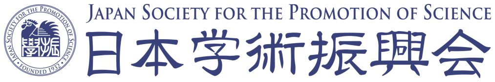
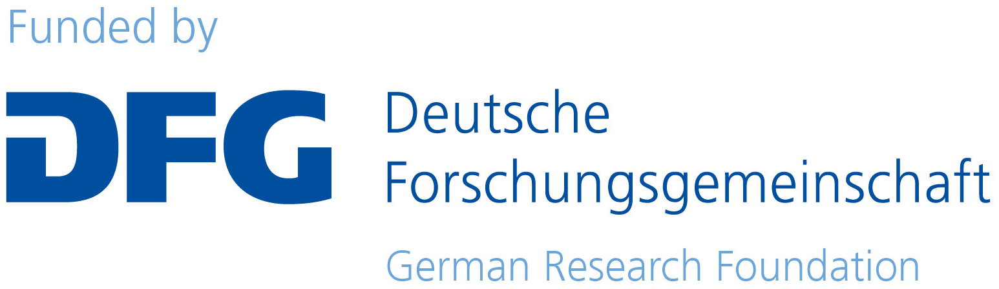
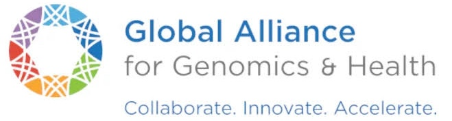
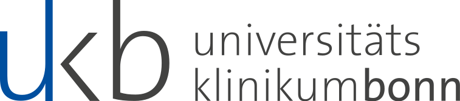

Day 0
2027年2月20日（土）
JSPS–DFG–GA4GH Workshop 2027
東京・2027年2月20–23日
本ワークショップは、日本学術振興会（JSPS）およびドイツ研究振興協会（DFG）の共同支援《二国間交流事業共同研究・セミナー》を受け、Global Alliance for Genomics and Health（GA4GH）との科学的連携のもと開催されます。
資金支援


科学・標準化に関する連携

日独共同ワークショップ｜プレカンファレンス・セミナーと3日間の本会議・共同活動
Day 0
2027年2月20日（土）
Day 1
2027年2月21日（日）
臨床基盤とAIツール
メイン学術イベントDay 2
2027年2月22日（月）
Day 3
2027年2月23日（火・祝）
研究テーマ
希少疾患の診断では、ゲノム情報、構造化された臨床表現型、医用画像を統合することの重要性が高まっています。
本ワークショップでは、Human Phenotype Ontology（HPO）、GA4GH Phenopackets、GestaltMatcher、PEDIA、PubCaseFinderをはじめ、マルチモーダル表現型解析、ゲノム診断、計算手法による顔貌表現型解析など、次世代表現型解析に取り組む日本とドイツの研究者が集います。
本共同研究では、次の3つの課題を重視します。
長期的には、構造化された表現型情報、画像、ゲノムデータを統合し、公平性とプライバシー保護を両立する、希少疾患診断のためのマルチモーダルな手法の開発を目指します。
共同研究
日本・ドイツ
基調講演
臨床遺伝学者
慶應義塾大学
日本
日本における希少疾患診断プロジェクト
基調講演
Berlin Institute of Health at Charité – Universitätsmedizin Berlin
ドイツ
エクソーム解析と遺伝子型・表現型の関連付けにおけるHPOの活用
臨床遺伝学者
国立成育医療研究センター（NCCHD）
日本
臨床遺伝学者
名古屋市立大学
日本
長崎大学病院
日本
DBCLS / ROIS
日本
ケルン大学病院 人類遺伝学部門
ドイツ
ボン大学病院
ドイツ
ボン大学病院
ドイツ
長崎大学 人類遺伝学分野
日本
プログラムは変更となる場合があります。時刻はすべて日本標準時（JST）です。
2027年2月20日（土）
13:00–17:30
同意取得、ローカル環境での解析、データ共有、ドイツ側チームからの許可を含む
2027年2月21日（日）
基調講演
Dr. Kenjiro Kosaki
慶應義塾大学
基調講演
Dr. Peter N. Robinson
ベルリン、ドイツ
Dr. Tadashi Kaname
NCCHD、日本
Dr. Soichi Ogishima
東北大学、日本
Dr. Toyofumi Fujiwara
DBCLS、日本
※ お弁当の提供を検討中
Dr. Peter M. Krawitz
ケルン大学病院 人類遺伝学部門
ドイツ
Dr. Tzung-Chien Hsieh
ボン、ドイツ
Dr. Shinji Saito
名古屋市立大学、日本
Dr. Hiroyuki Mishima
長崎、日本
2027年2月22日（月）
詳細は後日掲載します。
2027年2月23日（火・祝）
詳細は後日掲載します。
参加のご案内
参加登録は近日開始予定です。
日独共同ワークショップ
主催担当者
ボン大学病院、ドイツ
長崎大学病院、日本
DBCLS / ROIS、日本


ボン大学病院
thsieh@uni-bonn.de